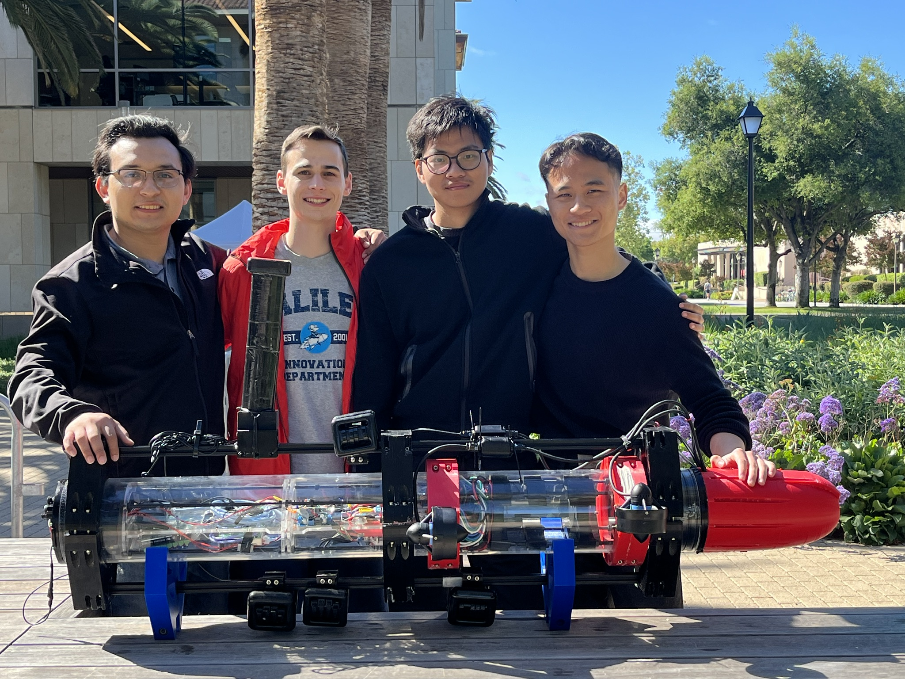
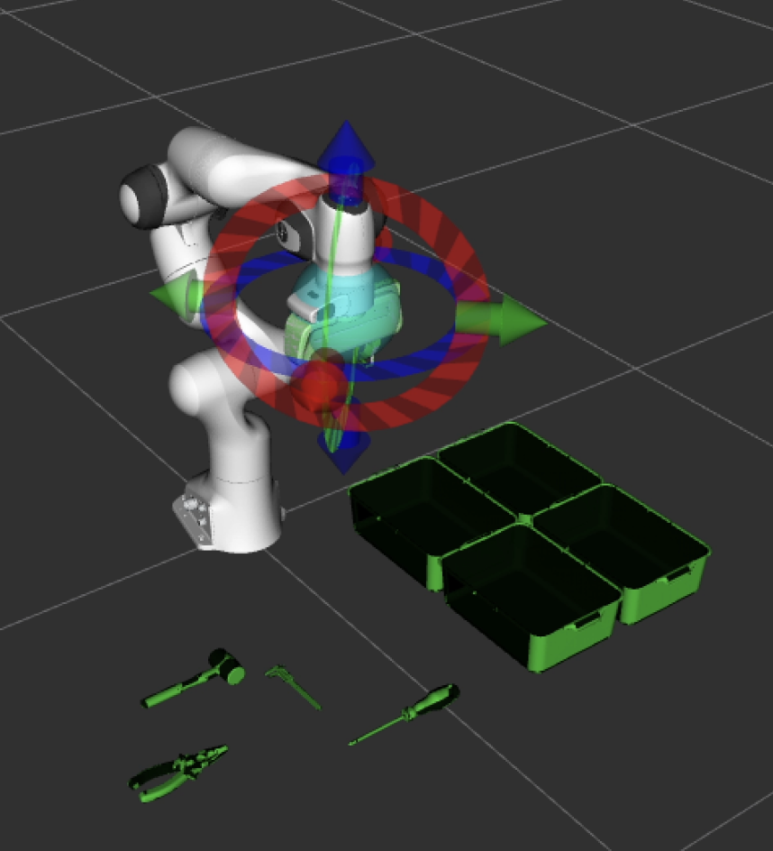
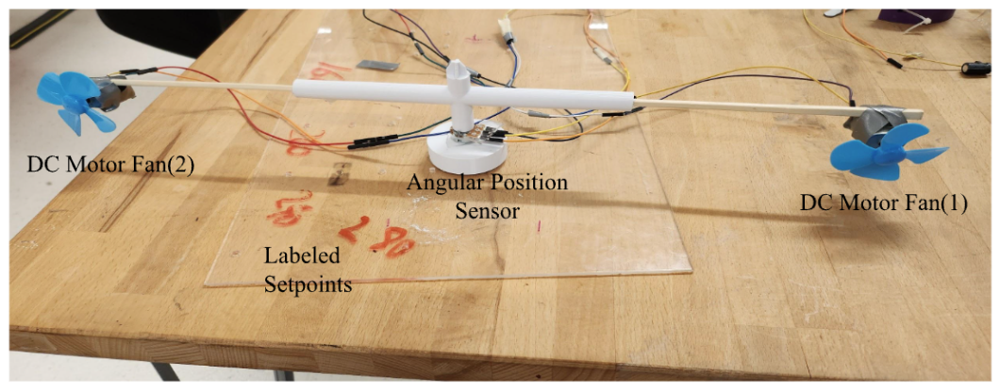
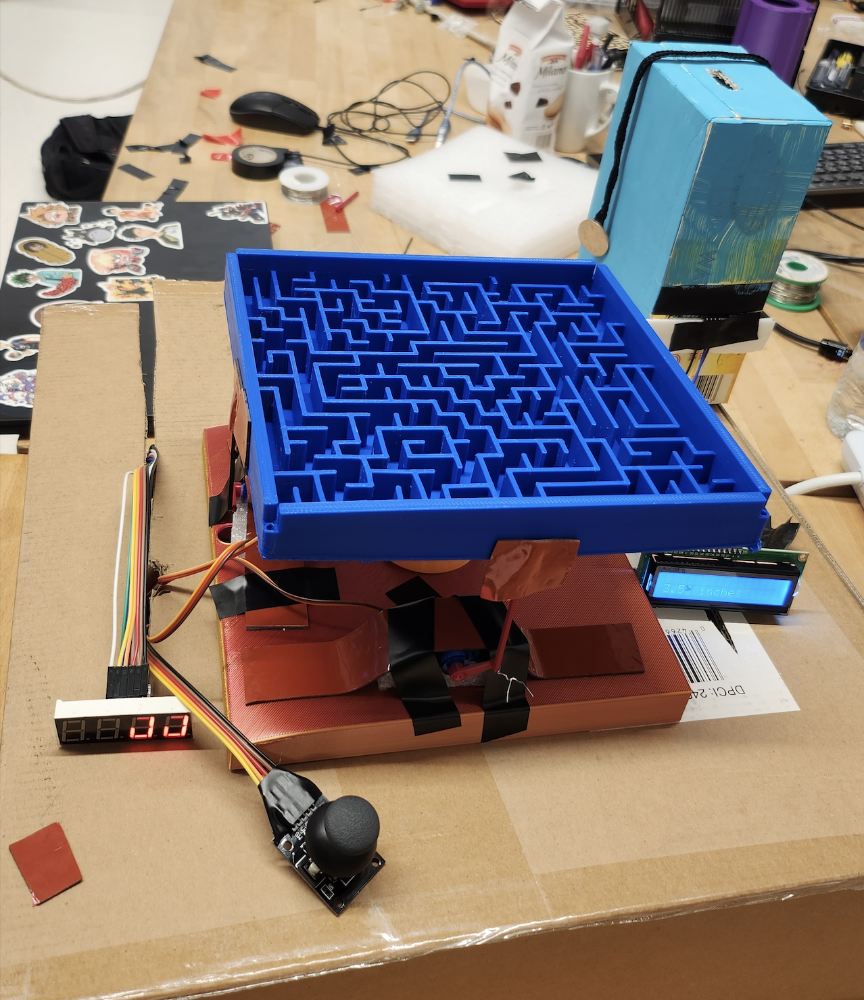
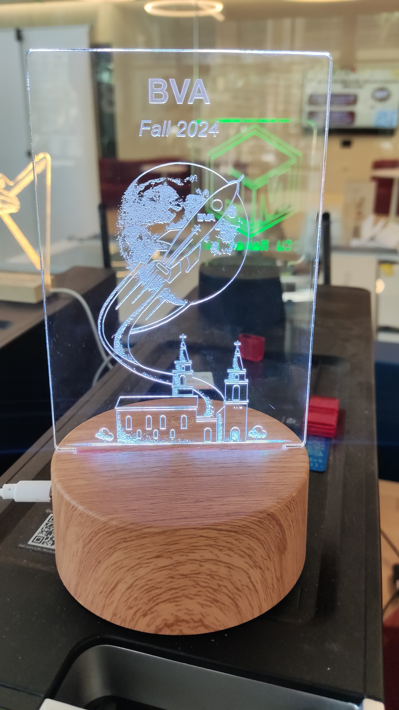

Robotics Engineer focused on whole-body control, mobile manipulation, robot learning-ready systems, and real-world deployment
I build robotic systems that combine hardware integration, control, perception, and autonomy for real-world operation.
Hi, I’m Kevin Wang, a robotics engineer with a background in mechanical engineering and a master’s in Robotics and Automation from Santa Clara University. My work focuses on building real-world robotic systems that combine control, software, and hardware integration. I have hands-on experience developing mobile manipulators using ROS 2, whole-body control, and real-time system coordination.
I’m particularly interested in control systems, robot autonomy, and learning-based robotics, and I enjoy working on problems where software, sensing, and physical systems come together in real environments.
This project investigates human–robot co-manipulation using a mobile manipulator platform (“Frank”) composed of a mobile base and an OpenManipulator-P arm integrated through a custom ROS 2 control architecture. The system is designed for shared physical tasks such as moving furniture, coordinated transport, and safe interaction in human-centered environments.
I improved system robustness through hardware rewiring, safety integration, and emergency-stop mechanisms, and developed multiple whole-body control frameworks that coordinate base and arm motion. A resolved-rate whole-body controller with null-space projection enables simultaneous task execution while secondary objectives such as posture regulation are handled in the null space.
In parallel, I implemented a QP-based whole-body controller that formulates base and arm motion as a constrained optimization problem, enabling systematic handling of task priorities and physical limits, with obstacle avoidance under development. At the low level, I developed torque control, joint-space impedance control, and an admittance controller for compliant and force-responsive behavior.
This platform also serves as a learning-ready robotics system by supporting structured controller testing, hardware data collection, and future integration with policy learning, perception modules, and simulation-based training workflows.

For my senior design project, I collaborated with a multidisciplinary team to develop an underwater robot for waypoint-based water sampling. Through stakeholder interviews and trade-off analyses, we prioritized reliability, functionality, and safe operation in real deployment conditions.
We applied DFM principles and FEA simulations to improve manufacturability and structural reliability, integrated high-capacity electronics under strict safety constraints, and established assembly and pre-deployment review procedures. The project resulted in a 90+ page engineering report and earned Best in Interdisciplinary Session at the Senior Design Presentations.

I developed a robotic arm system in simulation to automate tool sorting and improve workbench organization. The project involved motion planning, task sequencing, and automated placement of tools into designated bins.
I also developed a user-facing interface and added voice control for intuitive hands-free interaction, demonstrating a combination of robot programming, human–robot interaction, and practical automation workflow design.

In this mechatronics project, I implemented PID control to regulate the angular position of a Lazy Susan mechanism by controlling the output effort of a fan motor. A variable resistor was used to measure angular position and close the feedback loop.
This project strengthened my hands-on experience with feedback control, actuator behavior, sensor integration, and real-world tuning of dynamic systems.

In this mechatronics project, I designed and fabricated a marble maze arcade machine using 3D-printed components, including the ball support joint and maze structure. The user controls the maze orientation through a joystick to guide the marble from start to finish.
I also implemented a timing function and display system to improve user interaction and overall gameplay experience, combining mechanical design, control, and embedded system implementation.
This project focuses on generating action sequences from coffee-making videos using machine learning. It includes tools for training an object detection model to recognize key objects and events such as pressing a start button or handling coffee grounds.
Users can fine-tune the model to their setup with a relatively small labeled dataset. The repository includes scripts for data preparation, labeling, YOLO-based fine-tuning, and event extraction. Once trained, the model tracks object positions, grasp points, and task-relevant motions while displaying detected actions alongside the video.

I designed an acrylic light stand for Bronco Venture Accelerator Cohort 6, exploring multiple concepts through an iterative prototyping process. Using laser cutting and rapid prototyping, I developed a final design that met customer expectations and manufacturing constraints.
Through repeated testing, I standardized the manufacturing process, optimized material selection and cutter settings, and created a fixture to improve repeatability. The project led to the successful delivery of 20 units and generated $400 in revenue with a $300 profit margin.